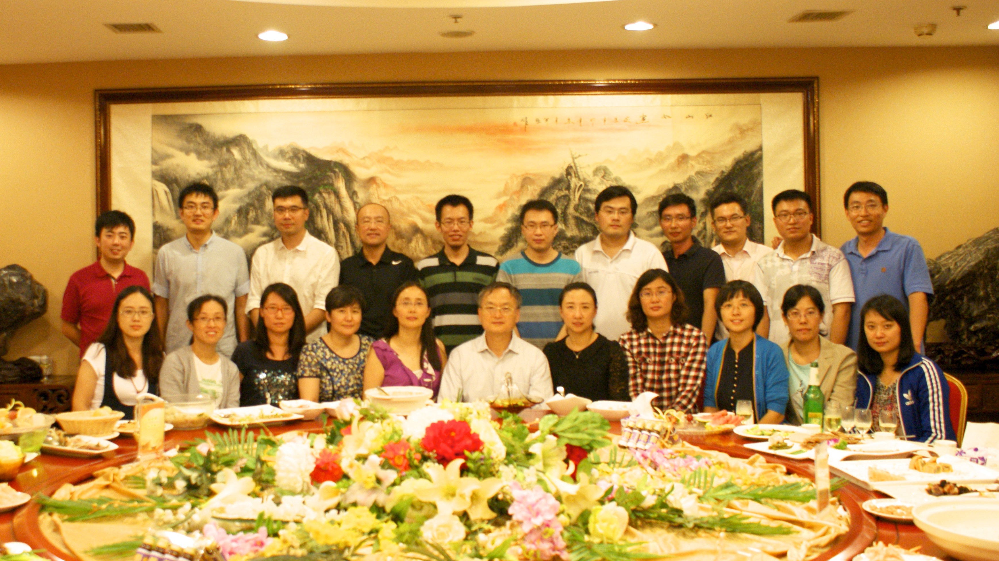

山东大学信息检索实验室，历史悠久，由上世纪80年代留日的马军教授创立。主要研究方向为信息检索、多媒体计算、和数据挖掘。近5年承担国家和省部级项目30多项，经费千余万元。
现有教授2人、副教授2人、助理教授2人、学术助理1人，教师100%拥有长期海外顶级实验室经历，梯队结构合理。现有在校博士后3人、博士8人、硕士30余人。已出站博士后3人、毕业博士19人、硕士60余人。每年招收博士2人，硕士20人。
在校生科研成果突出，其中最高奖学金--国家奖学金，已经连续三年获得全院总名额的1/3左右。毕业生有15人在海内外知名高校任教，在工业界的工作单位的主要分布在微软、阿里、百度、京东、腾讯等。大部分硕士毕业生起薪在25万以上，其中不乏多个工作5年年薪达百万的同学。
理论联系实际，只做实用的研究
培养理念是“学术上立规矩、生活上无大小”
支持读书期间学习驾驶、恋爱、度假、创业等
承诺博士至少1年的海外交流机会并提供充足的生活保障
针对工业界和学术界取向的硕士生，则根据取向因材施教
实验室计划于2017年招收2名博士和20名硕士（即2018年入学，保送生优先）。同时招收若干名高年级本科实习生。招生对象是计算机、软件、自动化、数学、和统计等相关专业学生。 希望申请的学生具有以下基本素养：
1）有很强的上进心和科研热情
2）至少熟悉一门编程语言
3）具有扎实的英语和数学基础
山大计算机学院教授、硕/博导、“齐鲁青年学者”、国家“青年千人”。于2013年从新加坡国立大学获博士学位。研究领域为多媒体计算、信息检索、以及它们在健康领域的应用。已发表CCF A类会议以及IEEE/ACM Trans汇刊50余篇。是ICIMCS2017主席，Information Science副主编，山大计算机学院泰山学堂和菁英班教授小组组长。
邮箱：nieliqiang@sdu.edu.cn
山大计算机学院副教授、硕导。主要从事大数据处理、健康计算、机器学习等方面的交叉研究。承担国家自然科学基金等项目8项，参加20余项。在SIGIR, WWW, COLING, WSDM等国际顶级会议，及TOIS, JASIST, IRJ, JCST等国际期刊上发表论文50余篇。访问过美国普渡大学、微软亚洲研究院。
邮箱：chenzhumin@sdu.edu.cn
山东大学计算机学院助理教授、硕导。于2015年从新加坡国立大学获得博士学位，后任新加坡科技研究局科学研究员。研究主要集中在多媒体分析与社会计算。在多个相关领域的国际顶级学术期刊及会议发表论文，并且担任TMM,ACMMM,CHI等国际顶级期刊会议的审稿人。山东大学计算机学院菁英班教授小组成员。
邮箱：gantian@sdu.edu.cn
目前是山东大学计算机学院助理教授、硕导。她分别于2016年取得新加坡国立大学，计算机科学系博士学位，2012年取得中国科学技术大学，电子工程与信息科学系学士学位。其研究方向主要包括信息检索，用户建模和社会网络分析。 宋雪萌已经在国际顶级学术期刊和会议，包括ACM SIGIR, ACM MM, ACM TOIS等发表多篇论文。
邮箱：songxuemeng@sdu.edu.cn